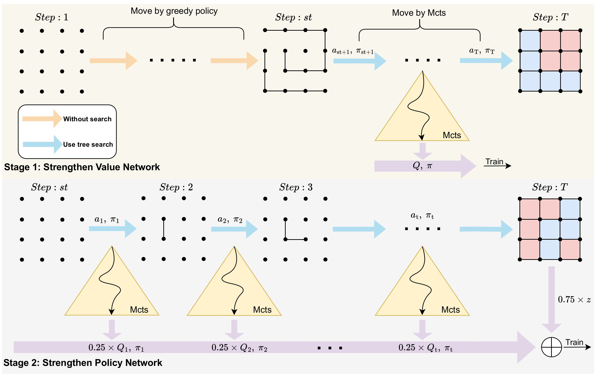
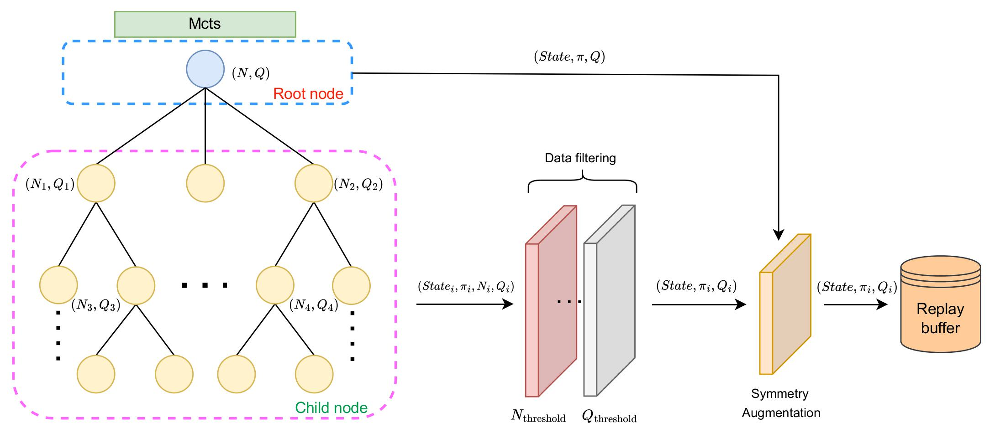
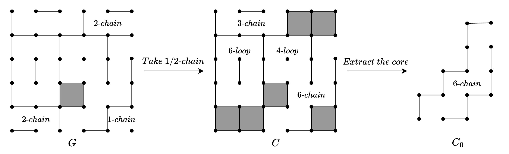
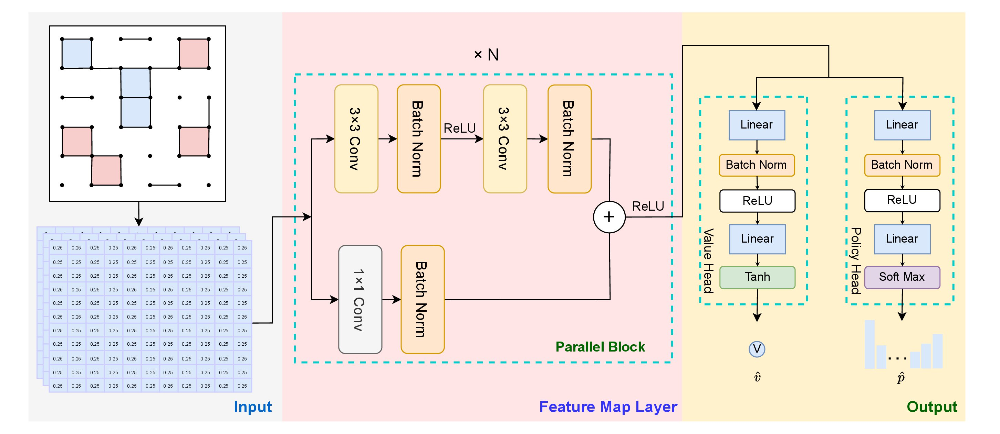

刘骐瑞
东北大学 邮箱：202212056@stu.neuq.edu.cn 2845119457l@gmail.com 电话：15204369625 微信：neuq67r 地址：吉林白城 |
教育背景
东北大学 - 计算机科学与技术 本科
专业排名: 15 / 191 (7.9%) CET6：449
主要课程: 高等数学 (99)、人工智能导论 (98)、C++程序设计 (97)、算法设计与分析 (97)、数据结构 (96)
获奖情况: 国家励志奖学金、校综合一等奖学金 (3次)、三好学生标兵、三好学生、优秀团员标兵
奖学金证书

国家励志奖学金

校综合一等奖学金

校综合一等奖学金

创新创业奖学金
荣誉称号

三好学生标兵

三好学生

优秀团员标兵

学习标兵
科研基础
- 对 (MM)LLMs，Reinforcement Learning、DRL 等领域感兴趣，以学生第一作者身份发表1篇 JCR 2 区 SCI期刊论文；
- 掌握 Pytorch 框架，理解并复现了 Transformer、Action chunking with Transformer、AlphaZero 等经典模型；
- 掌握 Overleaf (latex) 写作，擅长英文论文的撰写；擅长使用draw.io论文作图；
- 掌握 PPO，GRPO，DQN 等强化学习算法以及大模型基础知识 Lora，RLHF；
科研论文
- BoxesZero: An Efficient and Computationally Frugal Dots-and-Boxes Agent ( JCR 2 区期刊，共同一作) 论文概述：针对Alphazero架构回报信号稀疏，对计算资源需求高，资源利用率低等问题，本文提出了BoxesZero一种dots and boxes智能体，融合多种创新技术： 1.预训练两阶段的self-play方法，第一阶段采用大量数据利用回报Q进行预训练，第二阶段引入全局奖励信号z进行微调，使得策略网络收敛。 2.data augmentation的方法：在MCTS中筛选出高质量的节点增加数据量，并采用分布式的架构使得数据生成和训练可以同时进行。 3.残局定理的证明。 4.引入领域知识。实验结果表明：相同模型参数下预测准确率达到alphazero的两倍，仅训练40h elo分数快速达到1600，仅用了alphazero 1/4的时间。并且模型在训练280h时涌现出了一种尚未发现的策略；最终结果打败了Dots and boxes网上开源的所有模型取得了SOTA水平， 并且获得中国大学生计算机博弈大赛全国一等奖(冠军), 北京大学Botzone平台第一名。代码公开在 GitHub Link ；
- Two-stage self-play：在模型初期我们只采集残局的数据(这样的数据具有真实的回报信号，进行预训练(这个过程相当于价值网络在学习对丰富的局面的价值评估),
模型逐步前进，通过观察可以看到局的状态价值从0逐渐接近1，表明价值网络在提升，可以辨别出局面的输赢。在self-play第一阶段收集的数据为不同局面经过MCTS
搜索后根节点的状态价值Q(S)训练价值网络以及MCTS返回的策略pi。此阶段由于价值信号较为丰富，价值网络收敛较快，因此称为Strengthen value network。
在self-play的第二阶段采用0.25Q+0.75z的混合价值信号方法。第二阶段相当于对策略网络进行微调，预训练阶段的学习任务相当于对局面进行认知判断，但是最终的目
的只要能赢就可以，因此采用输赢z进行微调，在此过程中可以观察到策略网络的收敛。因此为Strengthen policy network。

- Data augmentation: 针对预训练阶段的数据量少的问题提出了一种Data augmentation的方法，在alphazero的做法中mcts搜索结束后，就将整个树都丢弃了，我
们考虑在树中抽取一些高质量的节点，进行训练。具体方案可以根据节点搜索次数N，选择Top k个节点(K取3~5)，或者根据固定的N和Q的约束条件，因为N，Q绝对值越大，可以在一定程度上说明这个节点质量高。最终经过旋转对称再一次数据增强。

- Extended endgame theorem: 针对点格棋本身的局面特性可以找出一些必走策略，在MCTS中遇到这种必走节点可以只纵向展开，不横向展开。经过剪枝的MCTS的树形更加的身，也就意味着奖励信号更加充足。 在已有的残局定理基础上证明了存在含有1-chain和2-chain的局面。

- Network Structure: 我们的网络结构主要分为三个部分：
1.input层，对棋盘进行初步手工特征提取，将一个H*W的棋盘变为（3，H，W）3个channel，第一个channel是分数差，第二个channel边的位置为1，无边为0。第三个channel有格子的位置为1，无为0。这样提取不会损失棋盘原始的任何信息。
2.第二层是特征提取层主要采用N块类似残差块的网络结构。负责对局面进行更深层次的特征提取。
3.第三层分为Value head和policy head。输出分别为当前棋盘的state value，和策略pi。

- Experiment：在模型初期我们只采集残局的数据(这样的数据具有真实的回报信号，进行预训练(这个过程相当于价值网络在学习对丰富的局面的价值评估),
模型逐步前进，通过观察可以看到局的状态价值从0逐渐接近1，表明价值网络在提升，可以辨别出局面的输赢。在self-play第一阶段收集的数据为不同局面经过MCTS
搜索后根节点的状态价值Q(S)训练价值网络以及MCTS返回的策略pi。此阶段由于价值信号较为丰富，价值网络收敛较快，因此称为Strengthen value network。
在self-play的第二阶段采用0.25Q+0.75z的混合价值信号方法。第二阶段相当于对策略网络进行微调，预训练阶段的学习任务相当于对局面进行认知判断，但是最终的目
的只要能赢就可以，因此采用输赢z进行微调，在此过程中可以观察到策略网络的收敛。因此为Strengthen policy network。
通过实验，我们证明了BoxesZero在多个指标上都优于现有的方法...


融合轻量化哈希与 Minimax 的 MCTS 算法 (北大核心期刊，在投，共同一作)
论文概述：针对传统搜索算法效率低，搜索成本高，哈希命中率低等挑战。提出了一种轻量化哈希技术，将点格棋的局面忽略不重要信息经过特征提取变为一个long long 类型的整数，相较于原始的字符串哈希压缩了存储空间。哈希命中率提高了近1倍，在35 step 之后的局面哈希命中率接近100%搜索速度提升了6倍； 还创新性的将MCTS与Minimax相结合，实现传统搜索算法与DRL方法相结合，极大提高了真实回报的传递，加速神经网络的收敛，缓解了奖励信号稀疏的问题。代码公开在 GitHub Link ；
负责内容： 提出idea，并编写代码实现；实验设计；论文核心内容撰写，包含摘要，引言，方法，实验等部分；绘制论文中的部分图片；
负责内容： 提出并实现整个BoxesZero框架；复现AAAI论文 Solving Dots and Boxes ；残局定理的数学推导；整体实验的设计，在机房大规模部署模型约30台机器； 构造了1万条数据集用于测试; 参与整个论文的撰写包括摘要，引言，方法，实验和结论等章节；论文所有图片的绘制；
竞赛获奖
- 中国大学生计算机博弈大赛点格棋赛道 (队长) 北京大学 Botzone 平台第一名，国家级一等奖(冠军)
- 中国大学生计算机博弈大赛五子棋赛道 (队长) 国家级一等奖
- 机器人开发者大赛 (RAICOM) 全国总决赛"编程技能赛" 国家级三等奖
- 中国大学生程序设计竞赛国赛（CCPC）秦皇岛站 （铜牌打星）国家级三等奖
- 中国大学生程序设计竞赛国赛（CCPC）桂林站 优胜奖
- 全国大学生数学竞赛（河北赛区） 省级二等奖
- 蓝桥杯大赛 C++ A 组编程赛（河北赛区） 省级二等奖

计算机博弈大赛 冠军

点格棋赛道 国家级一等奖

五子棋赛道 国家级一等奖

睿抗机器人开发者大赛（RAICOM）全国总决赛"编程技能赛" 国家级一等奖

中国大学生程序设计竞赛国赛（CCPC）桂林站 优胜奖

全国大学生数学竞赛（河北赛区）省级二等奖

图灵杯程序设计竞赛 二等奖

中国大学生程序设计竞赛国赛（CCPC）秦皇岛站 铜牌

中国大学生程序设计竞赛国赛（CCPC）秦皇岛站 铜牌